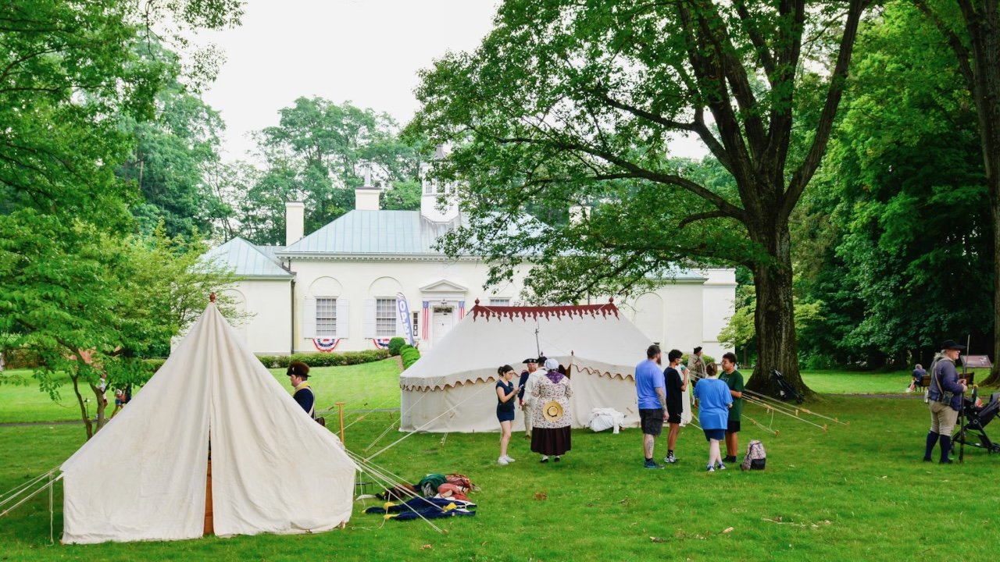

Pitching George Washington’s Tent: Celebrate America 250 at the Newberry

“Arrive early on June 6 and help pitch General Washington’s tent. Everything will be on the ground, mallets available and every age is welcome to participate. The full-scale replica has been handsewn stitch by stitch following the original,” Scott Stephenson, historian, President and CEO of the Museum of the American Revolution.
Help raise a handsewn replica of George Washington’s dining tent June 6 in Washington Square Park. Sit inside to imagine what it was like to dine with the General and then walk across Walton Street for a day at the Newberry Library highlighting the ongoing legacy of the Revolutionary War. Visitors will want to explore the Newberry’s exhibition, “Free and Independent: The Declaration of Independence and the Words That Made the United States,” featuring a rare early copy of the Declaration and more than two dozen historic items including the only surviving manuscript copy of John Jay’s Federalist No. 3, one of only five surviving manuscript drafts of any of the Federalist essays.
The Museum of the American Revolution in Philadelphia partners with The Society of Colonial Wars in the State of Illinois and the Newberry Library to display the First Oval Office Project, surely the best way to teach family members of all ages about what is often considered the supreme relic of George Washington. Costumed interpreters will provide guests an immersive exploration of the complexities of life on campaign during the Revolutionary War and Washington’s role as Commander in Chief.
The Museum’s ongoing First Oval Office Project began in 2013 with a partnership with the Historic Trades Department at The Colonial Williamsburg Foundation in Williamsburg, Virginia to reproduce and use full-scale replicas of Washington’s tents and camp equipage.

Later in the day as part of the Newberry Speakers Series offered free to the public, dialogues on the Declaration of Independence’s journey and a book by political scientist Danielle Allen, Harvard Professor and formerly a most valued University of Chicago professor, will occur. Danelle Allen and Scott Stephenson will discuss her recently released: Radical Duke: How One Aristocrat—and the American Revolution—Transformed Britain.
We spoke recently with Stephenson about Washington’s war tent and the immersive program it offers. For years, and more often in 2026 as part of America 250, the Museum has taken the tents on the road, previously to Palm Beach, Newport and other sites regionally and nationally. An affable and enthusiastic leader, he brings the Revolution to life, just as Washington’s sleeping and office on display at the Museum of the American Revolution has for over a million people who have visited since 2017.
“When you drive up the I-95 corridor in New England you see so many signs saying ‘Washington slept here’ on historic homes and taverns,” Stephenson said. “The tents, however, were where he went when he didn’t want any distractions, where he could write his dispatches. In fact, he had his guards placed outside so that no one would bother him until he came out the door.
“As you walk through these tents you can imagine the challenges he faced and the discipline required to keep the army together. It is also a fun way for the whole family to learn history.”
Stephen Schwab, a board member of the Museum of the American Revolution and a member of the Society of Colonial wars in the State of Illinois, told us of the day’s meaning to the Warriors and their partner organization the National Society of Colonial Dames in Illinois (NSCDA).
“The forebearers of most Warriors and Dames fought during the Revolutionary War, from Jamestown until 1775, or lived at this time. It’s great to focus on this crucial period of history and attend events with fellow members but I feel we are here not for insular purposes but to have a national and community purpose as well. There are 135 Warriors in Illinois and 4500 nationally. The Dames have contributed 25 percent of our funds for this, making them our biggest partner.

“There is a lack of civics education in our schools, we need to learn more about American history and its philosophy. When I heard 15 months ago that there was a possibility to bring the tent to Chicago and to bring in early American experts, I said: ‘Let’s do it.’ Scott Stephenson will be presenting how the Declaration of Independence influenced 120 countries.”
Schwab shared what the history and legacy of the sleeping and office tent means to him today:
“I am humbled that a man as great as George Washington would be living on the ground with the people fighting with him in all kinds of environmental conditions. We hope that many will come to celebrate and get inside the tent.”
The Newberry’s current exhibition, “Free and Independent: The Declaration of Independence and the Words That Made the United States,” will be open through July 18 and is part of a yearlong series of programs and exhibitions as a partner in Illinois America 250, a statewide effort to bring together Illinoisan’s diverse perspectives about our history and our future.
The Newberry’s copy of the Declaration is a rare broadside from Newport, Rhode Island, mistakenly dated June 13 rather than July 13, 1776. Only in August 1776, as the document began to circulate in Europe, did delegates of Congress sign the famous handwritten parchment scroll currently at the National Archives.
Other exhibition items include: A 1776 map of America; a revolutionary timeline dedicated to Benjamin Franklin; one of the first petitions by enslaved people to circulate widely in print; notes of a meeting between members of Congress and representatives of Native nations taken by Thomas Paine; and the biography of Deborah Sampson, a woman who disguised herself as a man to fight in the army.
The exhibition invites visitors to survey selected phrases from the Declaration, such as “All Men are created equal,” and to consider some of the surprising ideas behind those words. Collection items highlight influential figures such as John Locke, Benjamin Franklin, Mary Wollstonecraft, Alexander Hamilton, and John Jay.
The exhibition is curated by author Eric Slauter, Deputy Dean of the Arts and Humanities Division and the College at University of Chicago. His forthcoming book is on the origins, meanings, and afterlives of the Declaration of Independence. Watch for a new Newberry exhibition opening June 11. “Conceived in Liberty: Cartoons, Caricatures, and Illustrations in the Wartime United States, 1812–1918” from the Newberry’s collection.

For more information on the Museum of the American Revolution visit: amrevmuseum.org
For more information about the events for June 6 and more about the Newberry Library, visit: newberry.org